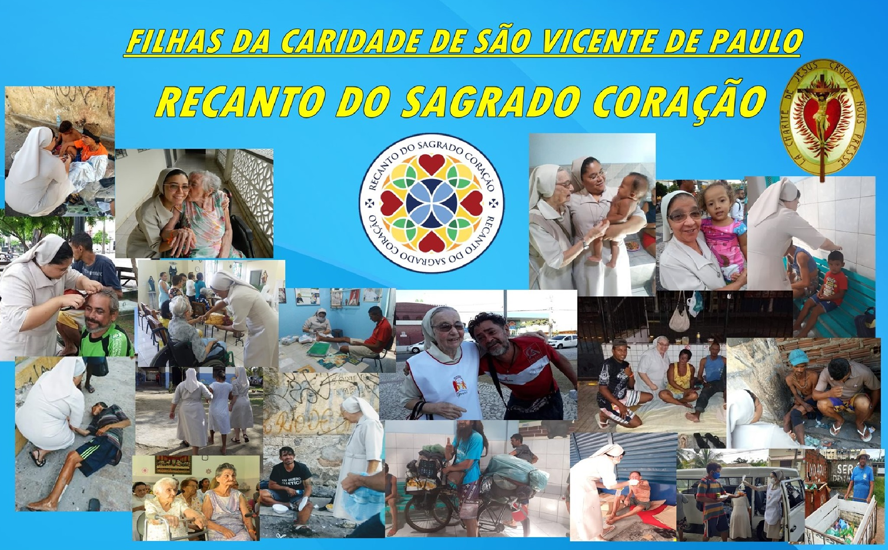

Sobre Nós

Um espaço de acolhimento, cuidado e transformação social
O Recanto Sagrado Coração é uma associação sem fins lucrativos localizada em Fortaleza, dedicada à assistência social de pessoas em situação de vulnerabilidade. A instituição atua como um lar de longa permanência para idosas, oferecendo acolhimento, cuidado diário e um ambiente digno para quem precisa de proteção e atenção contínua. Além disso, desenvolve ações solidárias voltadas à população em situação de rua, como distribuição de alimentos e apoio básico à sobrevivência.
Com uma trajetória marcada pelo compromisso com o bem-estar social, o Recanto também se envolve em iniciativas de recuperação e apoio terapêutico, contribuindo para a reintegração de pessoas em contextos de fragilidade. Seu trabalho é sustentado por valores como solidariedade, respeito e dignidade humana, buscando não apenas atender necessidades imediatas, mas também promover transformação e esperança na vida dos assistidos. :contentReference[oaicite:0]{index=0}
Doações
Localização
O Recanto Sagrado Coração está localizado em Fortaleza, na Av. da Universidade 3106 - Damas.